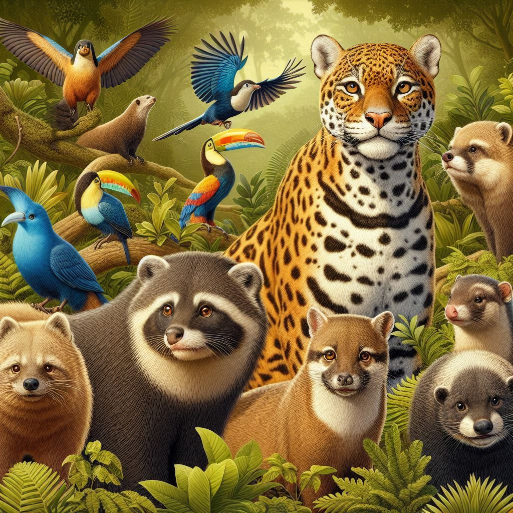
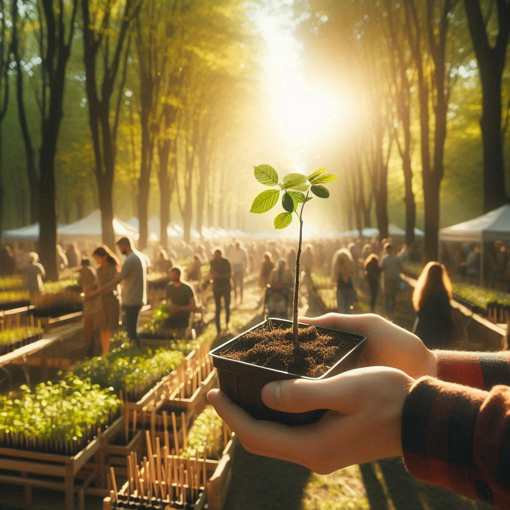

Plantando nas Cidades
Saiba mais

Riquezas do Paraná
Saiba mais

A agricultura é um pilar fundamental da economia paranaense, contribuindo significativamente para o desenvolvimento socioeconômico do estado. O Paraná é um dos maiores produtores de grãos, carnes e produtos agrícolas do Brasil, sustentando não apenas a economia local, mas também o abastecimento alimentar de diversas regiões. Dada a sua relevância, trazer a agricultura para dentro das cidades do Paraná pode ampliar seus benefícios e promover um desenvolvimento mais sustentável.
Integrar a agricultura ao ambiente urbano oferece diversas vantagens. Primeiramente, melhora a segurança alimentar, garantindo que os cidadãos tenham acesso a alimentos frescos e nutritivos. Hortas comunitárias, jardins verticais e telhados verdes são exemplos práticos de como cultivar alimentos em espaços urbanos, reduzindo a dependência de alimentos transportados de longe e, consequentemente, a pegada de carbono associada.
A agricultura urbana promove a sustentabilidade ambiental, ajudando a reduzir os efeitos das ilhas de calor e a melhorar a qualidade do ar. Também cria oportunidades de emprego e geração de renda, especialmente em áreas de baixa renda, fortalecendo a economia local e promovendo a coesão social. Projetos de agricultura urbana também têm um papel educativo crucial, sensibilizando a população sobre a importância da sustentabilidade e da alimentação saudável.
Trazer iniciativas como o plantio para as cidades pode parecer um desafio, mas é uma oportunidade de ouro para promover a sustentabilidade e melhorar a qualidade de vida urbana. Construir hortas comunitárias, telhados verdes e jardins verticais, são exemplos de como isso pode ser feito. Se você quer fazer parte dessa mudança, confira nosso guia para começar a cultivar seus alimentos no conforto da sua casa. Você também poderá descobrir diversas informações detalhadas sobre a agricultura do Paraná e os produtos que são produzidos nessa região.